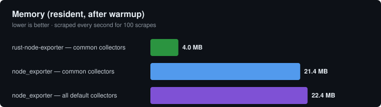
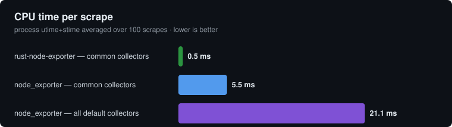
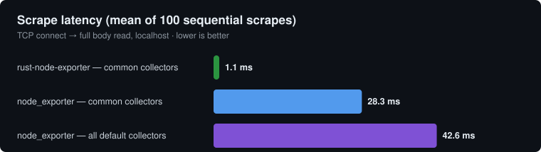
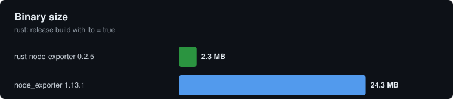

Real benchmarks, run on the author's desktop · measuredsame machine, same request pattern
rust-node-exporter is a small single-binary Prometheus exporter written in Rust that exposes custom desktop hardware metrics (NZXT Kraken AIO over hidapi, lm_sensors via FFI, hddtemp, nvidia-smi, radeontop GPU stats) alongside the standard /proc-based node metrics.
This page compares it against prometheus/node_exporter using measured numbers, not hand-waving. Both binaries ran on the same machine, on localhost, and were scraped with the identical request pattern (100 sequential scrapes after a 20-scrape warmup).
For a fair head-to-head, both exporters were started with only the collectors both
implement: meminfo, netdev, stat, and hardware
sensors (hwmon for node_exporter, lm_sensors FFI for
rust-node-exporter).
| Metric | rust-node-exporter 0.2.8 | node_exporter 1.13.1 | Rust advantage |
|---|---|---|---|
| Runtime memory (RSS, after warmup) | 4.0 MB | 21.4 MB | 5.4× less |
| CPU time per scrape | 0.3 ms | 5.5 ms | 18× less |
| Scrape latency (mean of 100) | 1.0 ms | 28.5 ms | 28× faster |
| Startup to first successful scrape | 16 ms | 77 ms | 4.9× faster |
| Binary size | 2.3 MB (lto) | 24.3 MB | 10× smaller |
| Metric lines exposed | 404 | 337 | — |




node_exporter's default configuration runs ~50 collectors. That is not apples-to-apples — it does 5× more work and produces 3.7× the output — but it shows the footprint of the tool most people actually run:
| Metric | rust-node-exporter 0.2.8 | node_exporter 1.13.1 (all defaults) |
|---|---|---|
| Runtime memory (RSS) | 4.0 MB | 22.4 MB |
| CPU time per scrape | 0.3 ms | 20.7 ms |
| Scrape latency (mean) | 1.0 ms | 43.2 ms |
| Response size | 14.9 KB | 137.6 KB |
| Metric lines exposed | 404 | 1582 |
--release
with lto = true) vs node_exporter 1.13.1 official release (go1.27.4).VmRSS after the 20-scrape warmup, read from
/proc/<pid>/status.utime+stime deltas from
/proc/<pid>/stat divided by 100 scrapes.node_scrape_collector_success. That robustness gap is what the CPU/RAM
savings buy.The harness, chart generator, and raw results are committed under docs/benchmark/:
# with node_exporter 1.13.1 extracted next to it
python3 docs/benchmark/bench.py # writes results.json
python3 docs/benchmark/gen_svg.py # regenerates the SVGs